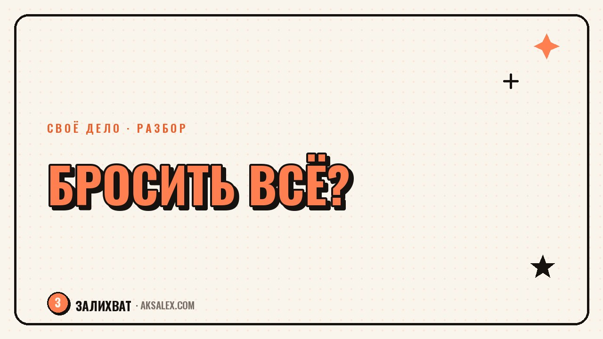

Хочется бросить всё и начать с нуля: кризис или шанс

Мысль «всё брошу и начну с нуля» приходит почти к каждому, кто занимается своим делом дольше года. Иногда это сигнал настоящей ошибки выбора, иногда - обычная усталость, которая прошла бы за пару недель отдыха. Проблема в том, что в моменте эти два состояния чувствуются одинаково: та же апатия, то же желание всё закрыть и уехать. Разобраться, что перед тобой, можно - но не за один вечер и не на эмоциях.
Хотеть всё бросить - это нормально, а не провал
Первое, с чем стоит разобраться: сама мысль о том, чтобы всё бросить, не делает тебя слабым или непостоянным. Она приходит у большинства людей, которые вложились в дело всерьёз - именно потому, что цена ошибки и усталости в своём деле выше, чем в найме, где можно уйти в отпуск и вернуться к прежним задачам.
Стыд за эту мысль обычно мешает больше, чем сама мысль. Люди откладывают честный разговор с собой на месяцы, потому что боятся признать: «я, кажется, хочу всё бросить» звучит как слабость. На практике это сигнал, который нужно расшифровать, а не диагноз.
Как отличить выгорание от «это не моё»
Главное различие - не в силе эмоции, а в том, на что она реагирует. При выгорании человек устал от конкретных процессов: переписки с клиентами, отчётности, рутины, которая раньше не напрягала так сильно. При честном «это не моё» устаёшь не от процессов, а от самой сути дела - даже в лучший день, без завалов и дедлайнов, суть не радует.
Простой тест на неделю
- Выпиши 5 задач своего дела, которые делаешь чаще всего
- Отдельно отметь, какие из них устают тебя сами по себе, а какие - из-за объёма и спешки
- Вспомни момент за последний год, когда дело по-настоящему радовало - что именно там было
- Спроси себя: если убрать рутину и спешку, остался бы повод продолжать
- Дай себе неделю без резких решений - записывай реакцию на дело каждый день, а не только в пиковый момент усталости
Если после снятия рутины и спешки повод продолжать находится - скорее перед тобой выгорание, а не ошибка выбора. Если даже в лучший сценарий не хочется возвращаться - стоит отнестись к этому серьёзно.
Если это выгорание: что делать до увольнения из жизни
Выгорание лечится не отказом от дела, а изменением условий внутри него. Часто помогает убрать не всё дело, а один конкретный процесс: передать переписку с клиентами, автоматизировать отчётность, отказаться от части клиентов, которые отнимают больше энергии, чем платят.
Усталость от дела и усталость от того, как ты его организовал, - это две разные усталости. Первую лечит пауза, вторую лечит пересборка процессов.
Полезно взять короткую паузу без решений - неделю-две без обязательств сверх необходимого минимума, не для отдыха от дела вообще, а для того, чтобы отличить усталость от процессов от усталости от самой сути. Решения, принятые в пике усталости, чаще оказываются ошибочными и дорогими.
Если решение бросить - верное: как не разрушить всё одним шагом
Если после честной проверки выходит, что суть дела действительно не радует, важно не превращать это в резкий разрыв со всем сразу. Перед закрытием дела стоит ответить себе на три вопроса: что из текущих навыков и связей переносится в новое дело, какой горизонт по деньгам есть на переход, и нужен ли переход резким или можно совмещать какое-то время.
Начинать с нуля не значит обесценивать прошлое дело. Опыт, клиенты, репутация и навыки организации почти всегда переносятся частично даже в совершенно другую сферу - их полезно выписать отдельно, прежде чем решать, что «всё было впустую».
Кризис или честный поворот: как отличить
Ниже - сравнение признаков, по которым проще сориентироваться, что ближе к твоей ситуации.
| Признак | Выгорание | Честное «это не моё» |
|---|---|---|
| Реакция на отдых | после паузы хочется вернуться к делу | после паузы нет желания возвращаться |
| Что утомляет | конкретные процессы: отчётность, переписка, рутина | сама суть дела, даже без рутины |
| Лучшие моменты за год | вспоминаются легко и ярко | вспомнить сложно, их почти нет |
| Мысль о продолжении через год | страх не выдержать темп | скука и равнодушие к результату |
| Что помогает | пересборка процессов, делегирование, пауза | подготовка к переходу в другое дело |
Частые вопросы
Как понять, что я не выгорел, а действительно занимаюсь не своим делом?
Проверь реакцию после полноценной паузы: если после отдыха хочется вернуться к делу - это выгорание. Если даже отдохнув, не чувствуешь интереса к сути дела, а не только к рутине вокруг - это более честный сигнал, что дело не твоё.
Что делать, если хочется всё бросить, но страшно начинать с нуля?
Страх перед нулём - нормальная часть такого решения, и он не означает, что решение неверное. Полезно выписать, что из текущих навыков и связей переносится в новое дело - почти всегда это снижает ощущение, что начинаешь буквально с пустого места.
Сколько времени нужно, чтобы отличить кризис от правильного решения?
Обычно хватает двух-трёх недель наблюдения без резких шагов, с ежедневными короткими заметками о реакции на дело. Решения, принятые в первый день острой усталости, чаще оказываются поспешными.
Можно ли совмещать старое дело и новое, пока решаешь?
Да, и это часто безопаснее резкого разрыва - совмещение даёт финансовую подушку и время проверить новое направление на практике, а не только в мыслях. Полный переход логичнее делать, когда новое дело уже даёт результат, а не только надежду.
Что если окружение не поддерживает решение всё изменить?
Поддержка окружения и правильность решения - разные вещи, и близким свойственно реагировать на перемены тревогой, а не оценивать их по существу. Стоит ориентироваться на свои наблюдения за несколько недель, а не только на реакцию семьи в первый день разговора.
Раз тема оказалась полезной, вот что почитать следующим. Нейросеть не заменит турагента полностью, но собирает маршрут, бюджет и список дел в поездке быстрее, чем ты откроешь десять вкладок форумов.
Читать статью →а не вручную